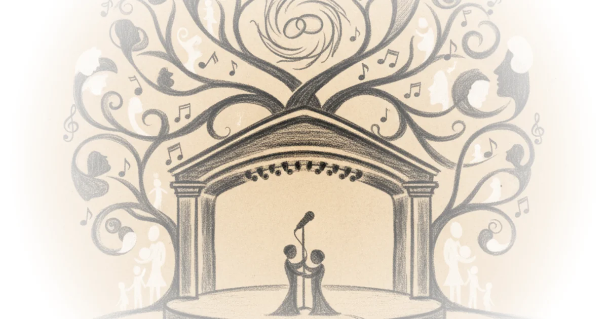

In a landscape often dominated by algorithmic outrage and digital performative conflict, Sarah Kendzior offers a startlingly intimate counter-narrative: that the most profound signs of hope are found not in the feed, but in the silence of the Ozark woods. This piece is notable not for its political critique, though it is sharp, but for its refusal to let the machinery of modern life—be it corporate media or social platforms—dictate the terms of human grief and survival. Kendzior argues that when the digital world turns hostile, the physical world remains a repository of grace, a claim that feels less like a metaphor and more like a lifeline for anyone navigating the exhaustion of the current era.
The Stage and the Void
Kendzior begins by grounding her narrative in the sacred geography of Nashville, specifically the Ryman Auditorium, a venue that has hosted legends from Hank Williams to Johnny Cash. She uses this setting to frame a personal tragedy that mirrors a collective anxiety. "Sunlight poured through the stained-glass windows of country music's holy ground," she writes, contrasting the spiritual weight of the space with the fleeting nature of her family's reunion. The author juxtaposes the timeless artistry of Johnny Cash against the "soulless technology" of the modern age, noting how her children preferred the flash of the Glen Campbell Museum to the somber reality of Cash's final days.

The core of her argument here is that we are losing the ability to sit with mortality. Kendzior describes watching Cash's final music video, a moment of raw confrontation with death that her son, only ten years old, could not fully grasp. "He was dying in this video. He was 71, the same age my parents are now," she recalls, capturing the specific terror of the pandemic era where the future felt stolen. This framing is effective because it personalizes the abstract fear of a collapsing world. By anchoring the narrative in a father's terminal cancer diagnosis and a family's "stolen time," she transforms a political or social critique into a visceral human experience.
"Twenty-first-century truths are like that. I had taken the kids to the Johnny Cash Museum the day before... They shrugged. They knew Johnny Cash — his baritone blared through their childhoods — but preferred the Glen Campbell Museum, where we belted out 'Rhinestone Cowboy' karaoke to the horrified amusement of other patrons."
Critics might argue that this nostalgia for a simpler, more "soulful" past risks ignoring the systemic inequalities that made the South a cradle of music in the first place. However, Kendzior is not romanticizing the past; she is mourning the loss of a specific kind of human connection that the current media ecosystem actively dismantles. She suggests that the "corporeal void" of online life cannot replace the tangible reality of family and nature.
The Digital Ban and the Natural Sign
The narrative shifts sharply when Kendzior details her suspension from the social media platform BlueSky. The incident, sparked by a quote-tweet referencing a Johnny Cash lyric about "watching him die," serves as a case study in how digital platforms strip context to manufacture outrage. "BlueSky administrators, who suspended me a month later," she notes, highlighting the absurdity of a platform banning a writer for a literary reference while ignoring actual threats of violence elsewhere. The administration's failure to understand the cultural context of the "Folsom Prison Blues" lyric illustrates a broader disconnect between algorithmic moderation and human nuance.
Kendzior uses this digital exile to pivot toward her sanctuary in the Ozarks. She describes a "supernatural experience" at Don Robinson State Park, where a seemingly impossible convergence of weather, light, and wildlife occurred. "My leaf was like a key that opened a portal of sunlight," she writes, describing how the sun erupted and eagles appeared the moment she placed a fallen leaf on a gravestone. This section is the piece's most controversial and distinctive element. While a skeptic might dismiss this as confirmation bias or a coincidence of weather patterns, Kendzior frames it as a necessary act of survival. "I do not drink, do drugs, go to therapy, or take antidepressants," she states plainly, positioning nature not as a hobby but as a clinical necessity for her mental health.
"The land knows me. This sounds arrogant and superstitious. I hope I'm not falling prey to hubris by confessing it, but I do so with gratitude. I can feel recognition in the air. Every time I am there, something magical happens."
The argument here is that the "technofascist hell" of the 21st century—characterized by AI replacing human art and virtual reality replacing physical walks—requires a radical reconnection with the natural world to remain sane. She draws a parallel between the "karst formations" of the Ozarks and the hidden depths of the human soul, suggesting that just as water seeps through the soil to form caverns, truth seeps through the noise of the digital age to reach those who are willing to listen.
The Cover Artist and the Reborn Century
Kendzior concludes by reframing her own work as a writer through the lens of Johnny Cash's career as a cover artist. She argues that just as Cash could take a Nine Inch Nails song like "Hurt" and make it his own, she must reinterpret a world built by others to find meaning. "When Johnny Cash covers a song, it becomes a Johnny Cash song," she observes, applying this logic to her own struggle to find narrative coherence in a chaotic century. The reference to the song "The Twentieth Century Is Almost Over" by The Highwaymen serves as a haunting backdrop to her reflection on the current moment, suggesting that the old world has ended and a new, uncertain one has begun.
She critiques the corporate media's rejection of the South and its music, arguing that the region's deep ties to nature and its history of suffering make it the true cradle of American resilience. "The corporate world hates soul. As a result, it hates the south," she writes, linking the erasure of regional culture to the broader dehumanization of the digital age. This is a bold claim, but it is supported by her personal history of having her own writing about the South rejected by publishers as "irrelevant."
"I am reinterpreting a world that others have built, breathing new meaning into old memories, trying to convey in emotion what was forgotten in facts."
The piece's strength lies in its refusal to offer a neat political solution. Instead, it offers a spiritual and emotional strategy for endurance. While some may find the reliance on "signs" and "miracles" in nature to be escapist, Kendzior presents it as the only viable alternative to the despair induced by the news cycle. The "empty stage" of the title refers not just to the Ryman, but to the void left by the collapse of traditional institutions, a void that must be filled by personal, grounded connection.
Bottom Line
Sarah Kendzior's most powerful argument is that in an era of algorithmic fragmentation, the only way to reclaim our humanity is to step away from the screen and into the physical world, even if it means embracing the irrational comfort of nature's "signs." The piece's greatest vulnerability is its reliance on subjective, supernatural experiences that may alienate readers seeking empirical evidence, yet this is precisely its point: the data of the 21st century is insufficient to explain the human condition. Readers should watch for how this narrative of "rebirth through nature" evolves as the political climate continues to fracture, serving as a barometer for the growing disconnect between digital life and physical reality.